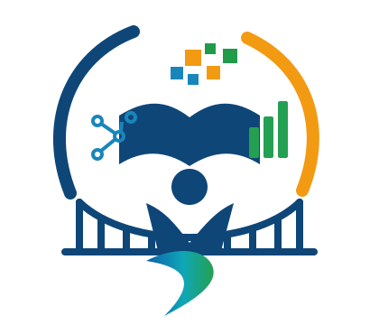

Discover your competency gaps

GyanSetu
Bridging competency gaps through learning
Your pathway to continuous growth.
Identify competency gaps, discover relevant learning, and build the skills needed for your role.
Access curated learning resources
Monitor your progress
Strengthen skills for a better you
Secure &
Trusted
Trusted
Public-sector
Use Case
Use Case
For Learners
Across India
Across India
Accessible
Anywhere
Anywhere
Independent SIH26101 student hackathon prototype. GyanSetu is not an official Government of India or iGOT Karmayogi authentication service.